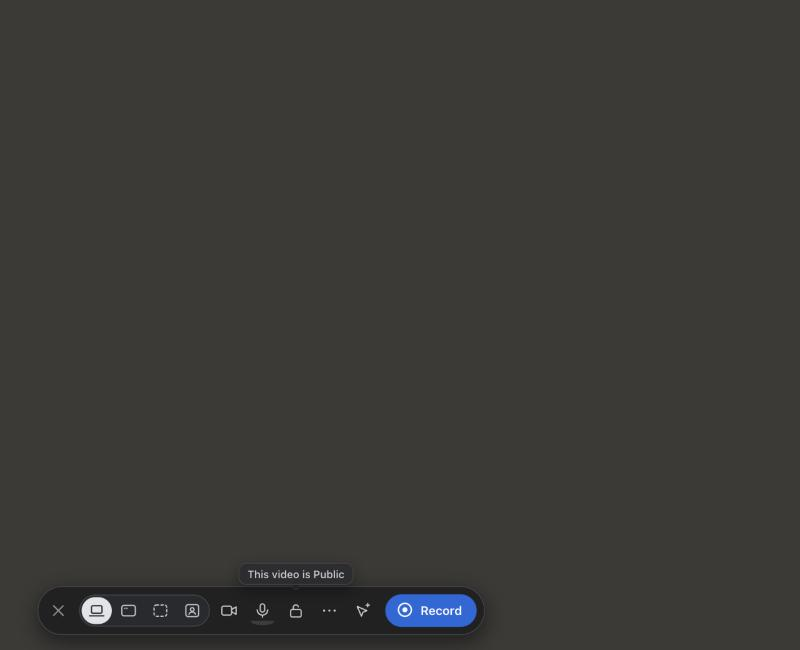
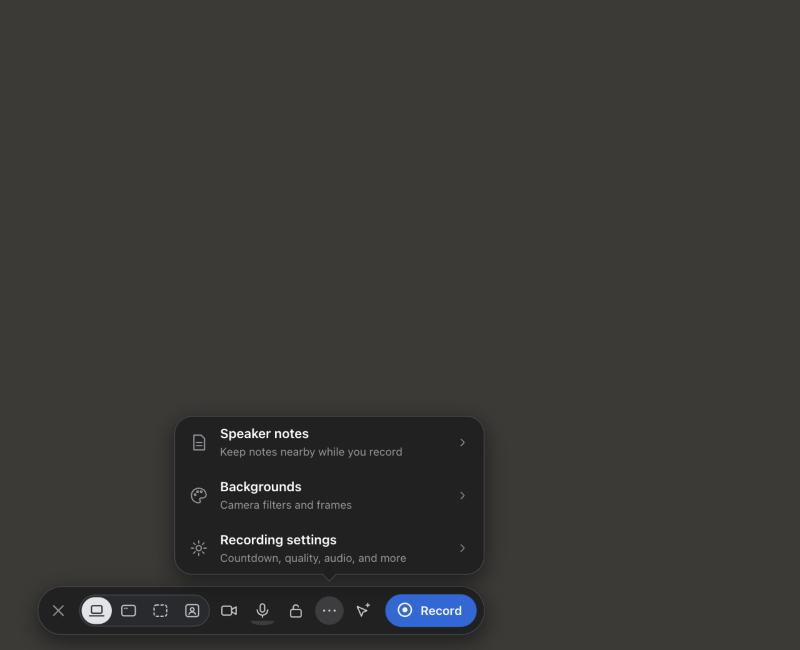
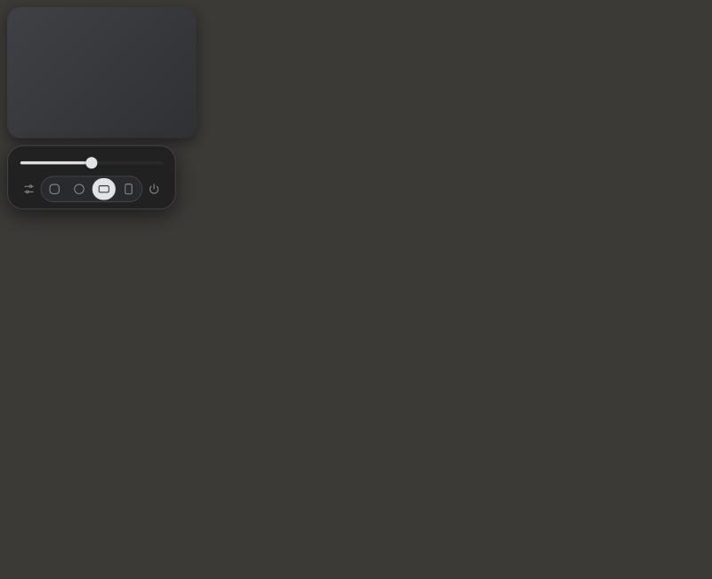

Phase 7: Hermes (right) against the Loom references (left)
Hermes shots are rendered from the real launcher/bubble HTML and CSS in a browser pane with a stubbed main process (no app launch). Scales differ; compare proportions.
Bar + tooltip
Loom

Hermes
Fixed: tooltip text and unselected source icons were too dim; both brighter now.
Fixed: device chevrons took bar width; now an overlay shown on hover (bar 548 px instead of 588).
Left as is: Record carries Hermes's own ring mark, not Loom's burst. Bar is still wider than Loom's because every Hermes item is on it, with 35 px buttons for 64 px-class hit targets.
More menu
Loom

Hermes
Fixed: subtitles wrapped to two lines at 330 px; popover is 380 px so each fits on one.
Fixed: arrow now sits over the "…" button and the button keeps its highlight disc.
Same: exactly three rows with icon, bold title, grey subtitle, chevron.
Bubble hover panel
Loom

Hermes (landscape, size M)
Fixed: the slider track had no filled part; the left of the thumb is now filled light, the rest dark.
Fixed: the shape row overflowed the panel; panel is 232 px wide.
Same: slider with 3 stops, filters icon left, four shapes (rounded square, circle, landscape, portrait), power icon right.